PROJECT CASE STUDY
CUSTOM 12×12 SHED BUILD.
A 144-square-foot backyard structure built from the ground up, with site challenges solved before the first wall went up.
PROJECT SCOPE
Built from the ground up.
The backyard presented significant grade variation, so the first challenge was creating a stable, level building platform. LA Core constructed a leveled gravel base contained by heavy pressure-treated timbers, then built the 12×12 floor system, wall framing, custom roof framing, exterior siding and corrugated roof. The work continued through winter conditions and demonstrates the full construction process from site preparation through enclosure.
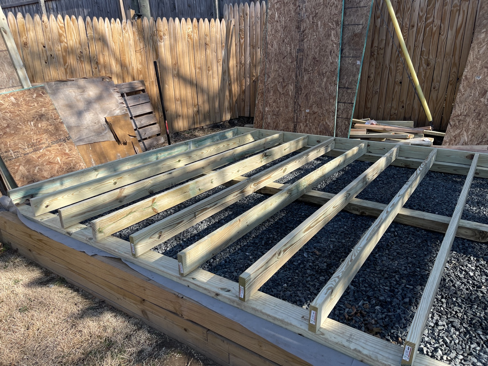
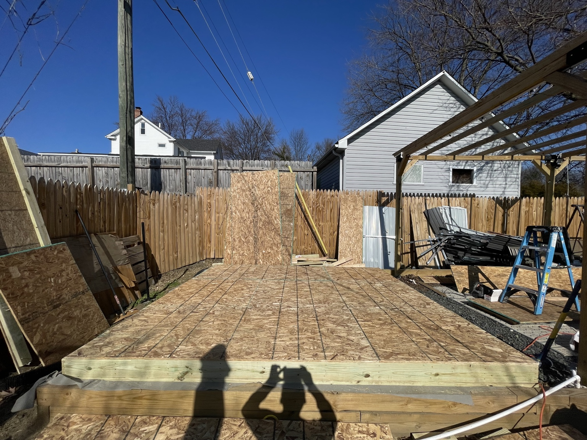
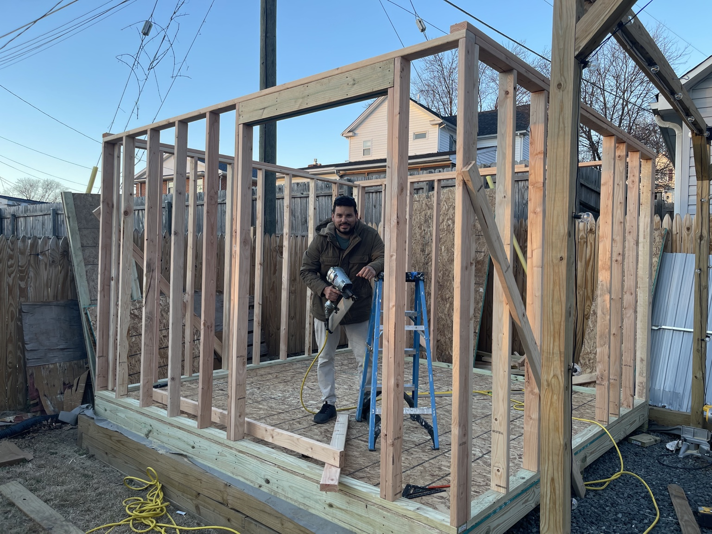
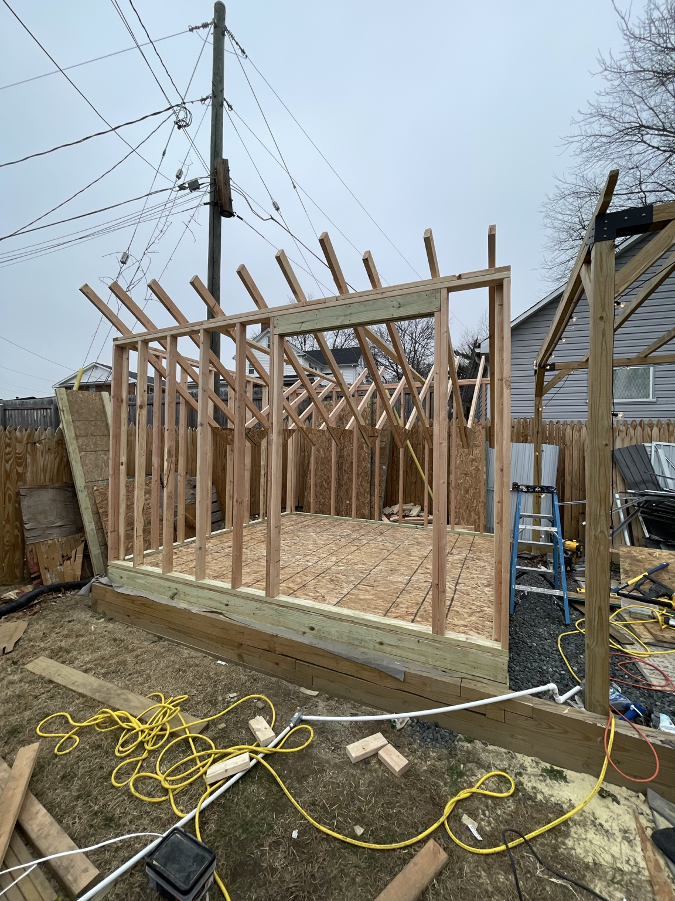

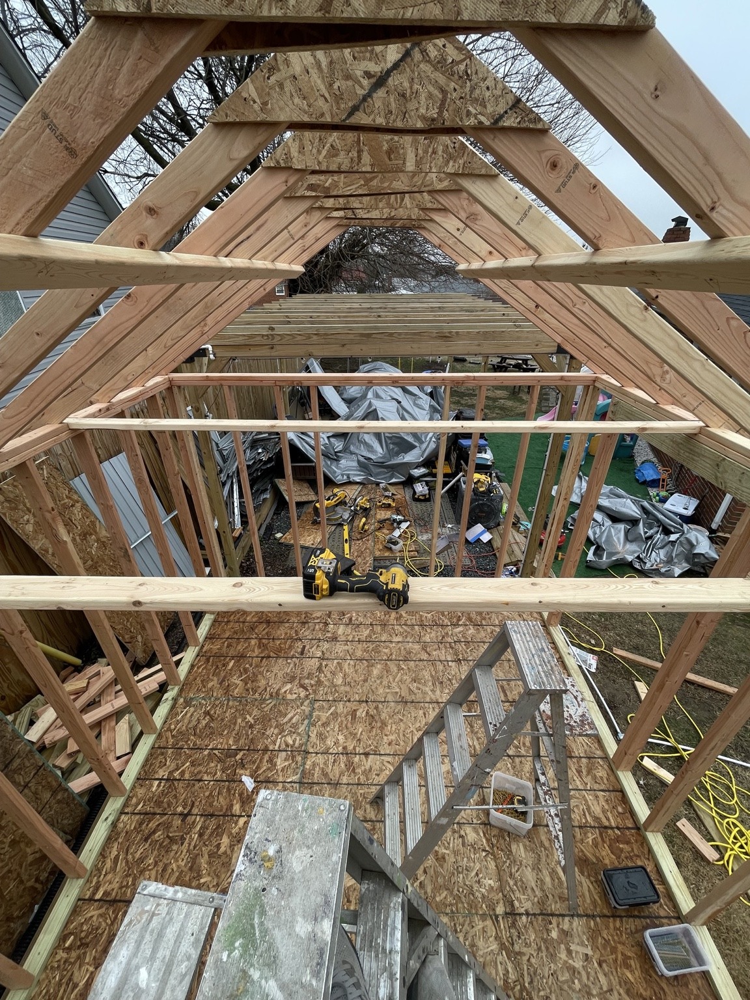
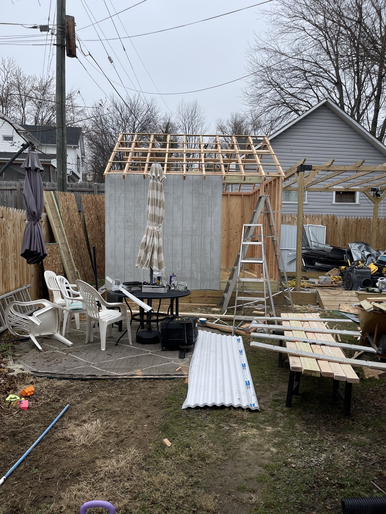
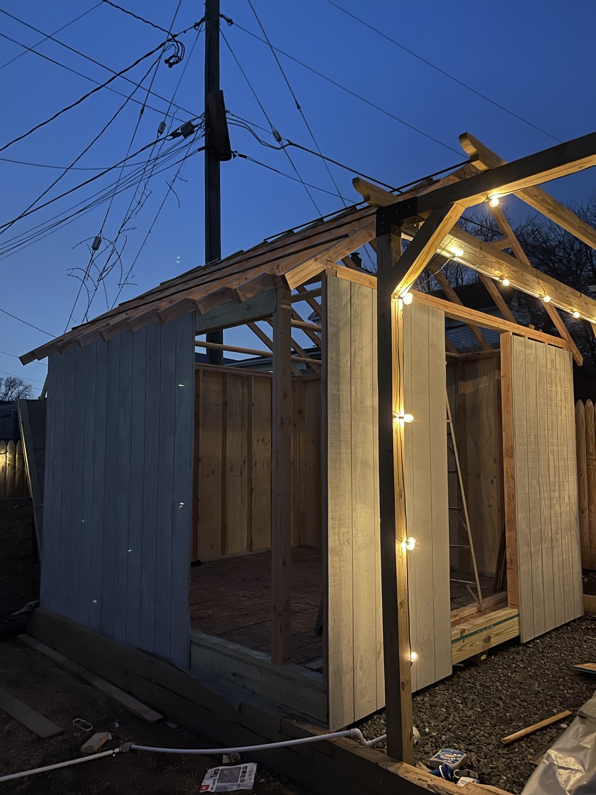
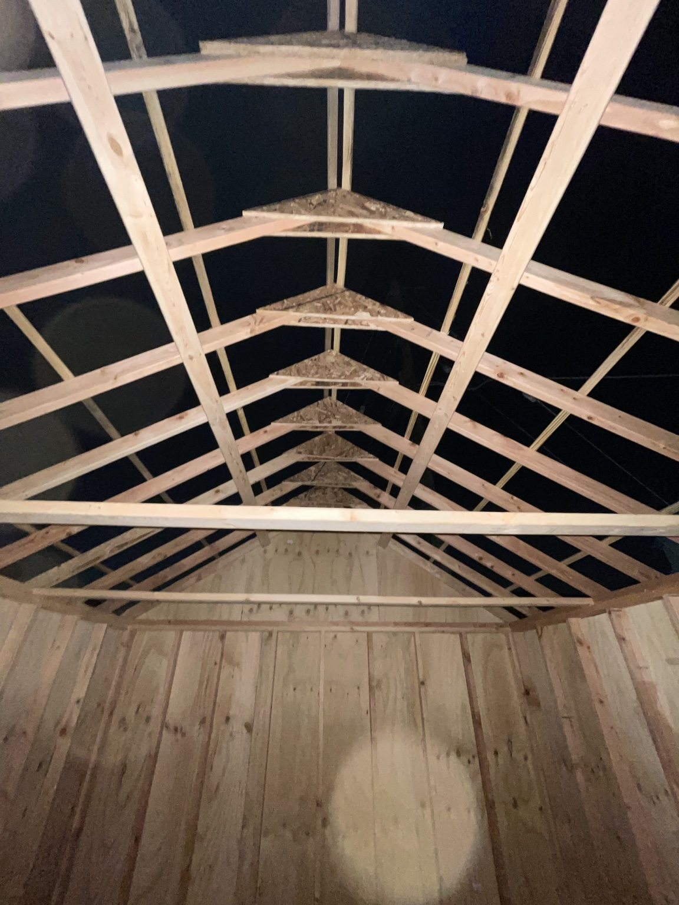
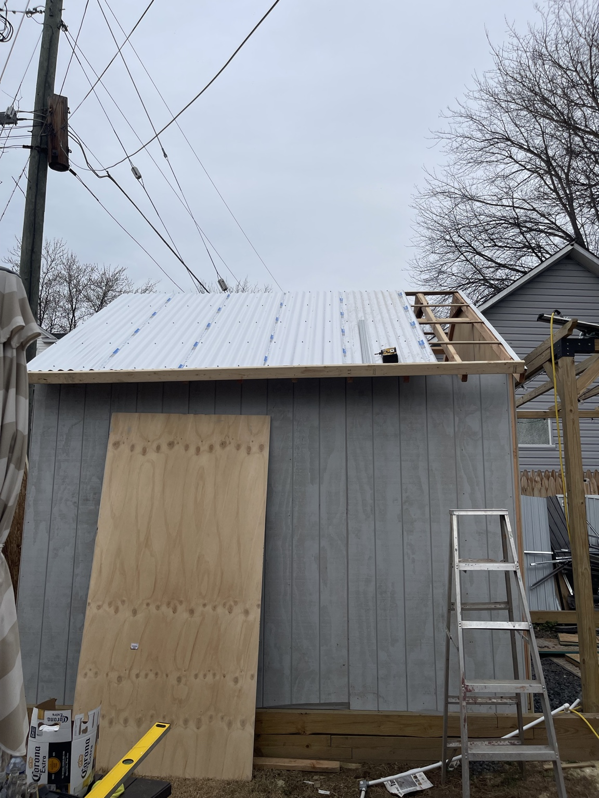
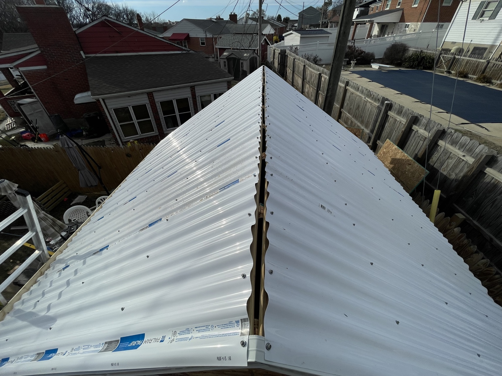
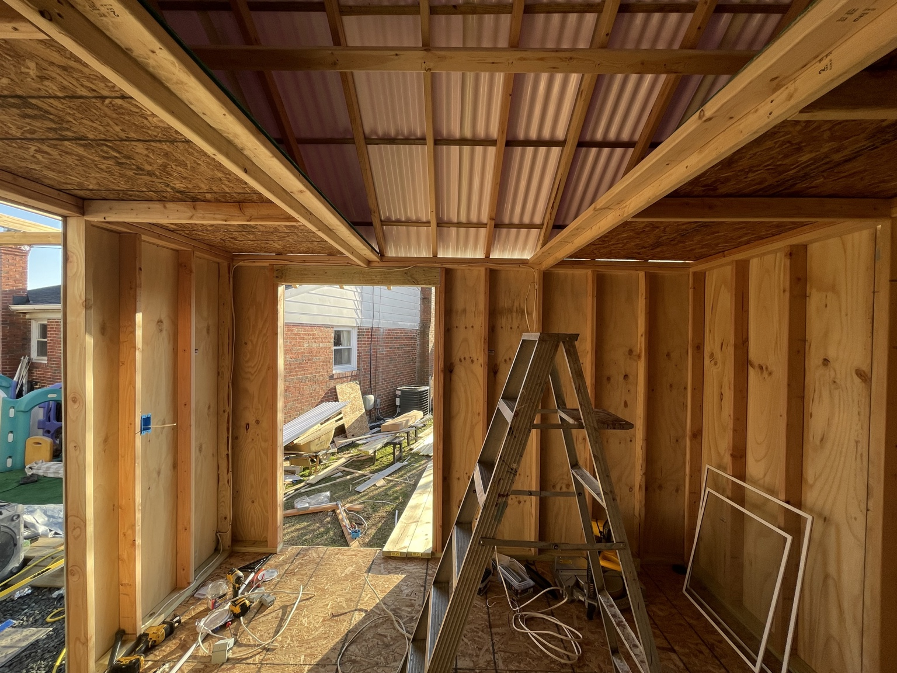
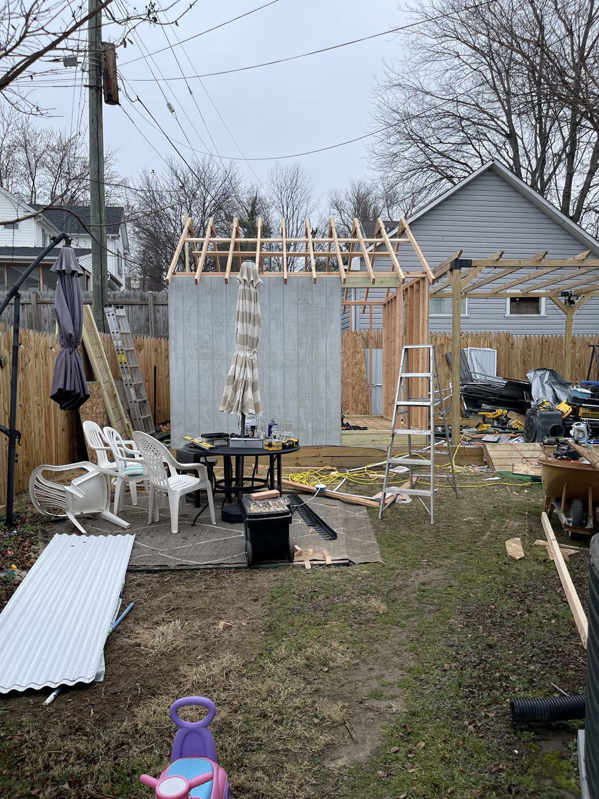
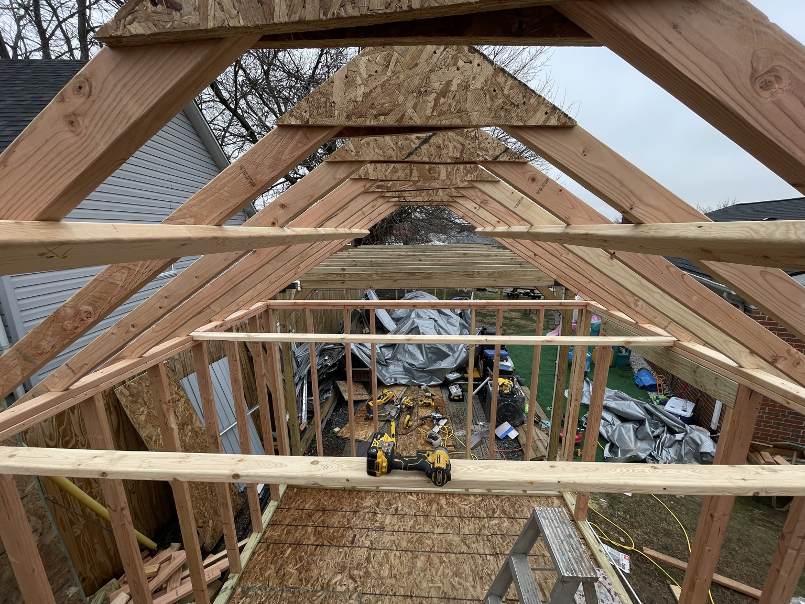
START YOUR PROJECT
Need something built from scratch?
Tell us about the space, the challenge and what you want to build.
Request an Estimate